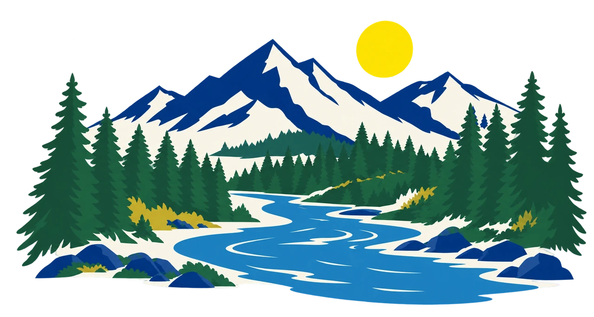

Oregon & Southwest Washington · 31 reaches · refreshed every morning
Read the river before you drive.
Dated fishing reports, river gauges, dam counts and ODFW trout stocking for every reach, side by side. When something is missing, we say so.
